EF.LLMEval Design Document
Audience: Engineers adding, extending or operating a model-and-prompt evaluation harness Scope:
EF.LLMEval,EF.LLMEval.FlowEngine,EF.LLMEval.DashboardLast updated: 2026-09
This document explains what the package is, how the pieces fit together and why each mechanism is shaped the way it is. It does not restate the API surface: every type, option and default is documented in EF.LLMEval/README.md, and this document links there rather than duplicating it.
For a step-by-step build, see LLMEval-INTEGRATION-GUIDE.md. For budgets, secrets and day-to-day running, see LLMEval-Operations.md.
Table of Contents
At a glance
- What LLMEval does for each workload
- How an eval run is judged, and what it costs
- Appendix: sample outputs - what an engineer actually reads after a run
The document
- Why the package exists
- Architecture overview
- Core concepts
- The sweep lifecycle
- Evaluators and judges
- The selection rule
- Throttle and continue
- The two judge paths
- Storage layout and caches
- The dashboard
- The prompt-development loop
- Design boundaries
What LLMEval does for each workload
The sections numbered below explain the machinery. This table is the short answer: find the shape of your workload on the left, and read across to what a sweep produces and what it is worth.
"Optimal" here never means "cheapest that passes". The selection rule reports two answers, and which one to take is a judgement the report supports rather than makes: the parity pick is the cheapest candidate judged as good as the incumbent, and the upgrade pick is a clearly better candidate whose cost per pass is within a bounded multiple of it. See section 6.
| Workload shape | What LLMEval runs | Output | Benefit |
|---|---|---|---|
| A single prompt or synthesis call. One request, one answer. An interpretation prompt that turns a structured record into prose. | A scenario sweep over the roster: the application's own code per candidate, hard gates for correctness, judged quality pairwise against the incumbent. | The optimal model for that prompt: a parity pick and an upgrade pick, each with cost per pass, win rate and its interval. | Lower runtime model cost at the same measured quality, or better output at a cost delta you can see before committing to it. |
| A multi-agent loop with no human. Two or more models handing work to each other until a condition is met. | An episode sweep with a role assignment per agent, varying one role at a time rather than taking a cross product. | The optimal model per role, with per-role cost broken out alongside the total. | Lower runtime cost per session. The split is the point: an acceptable total is often mostly one role that a cheaper model would run just as well. |
| A multi-agent loop with a human in the loop. The same, with a person replying in the middle. | The same episode sweep, with a scripted human (the default, free and identical every run) or a model-played persona priced under its own role. | Per-role picks plus turn and completion metrics: turns to completion, and whether the episode completed, hit its turn cap or was stopped. | The same cost benefit, plus reliability: a model that answers well but takes two extra turns, or fails to converge at all, is visible as such rather than as a good answer. |
| An EF.FlowEngine workflow. Agent nodes, human tasks, branches. | The FlowEngine adapter runs the real workflow with each agent node's client swapped for the cell's recording client, answering human tasks from the simulated human. | Per-node model picks, with the node history as the transcript and the workflow output as the scored artifact. | Lower runtime cost per execution, measured on the workflow that actually ships rather than on a re-implementation of it. |
| Prompt variant development. The model is settled; the wording is not. | The same sweep across prompt variants, with the shipped prompts as the control, plus deterministic adjustment hints and opt-in proposals. | The variant that passes more often, or costs less at parity quality, with its own selection group per variant. | Better prompts before they ship, decided on measurement rather than on a reading of two outputs. |
| A routing or provider decision. Same model, different route. | The same models run across connections: direct, gateway or aggregator, and region. | Cost and latency per route, with the upstream that actually answered recorded per cell. | The cheapest route at parity, and early warning when a route quietly serves something other than what it advertises. |
Every row is the same sweep with a different shape of workload, which is why the rest of this document describes one pipeline rather than six.
How an eval run is judged, and what it costs
An eval run has two cost centres, and they are not the same size. The candidate calls are the thing being measured; the judge is the thing being paid for. Deciding where the final judging and ranking happens is therefore the single biggest lever on what a sweep costs.
The two modes
| Full-provider mode | In-harness mode | |
|---|---|---|
| Candidate roles | API connections | API connections, exactly the same |
| Judge | An API connection, selected with
LLMEVAL_JUDGE_CONNECTION |
The Claude Code subagent, answering through the file exchange |
| What is billed | Candidate calls and judge calls | Candidate calls only |
| Judge cost reported as | A figure, included in the actual spend | Not available, never zero. Subscription quota, not dollars |
| Runs unattended | Yes: dashboard, CI-triggered, scheduled, a plain test run | No: needs the harness session and a live drainer heartbeat |
| Reproducible judge | Yes, a pinned model id | Only in the sense that the reply files are kept |
The candidate half of the run is identical between the two. Nothing about the models under test, the gates, the pricing or the ranking changes; only who answers the judge, and who pays for it.
Why the judge dominates
The judge answers for every cell of the matrix, and each of its calls is expensive in input tokens because of what it has to carry:
- Two pairwise calls per non-incumbent cell. Each carries the original request, both responses and the rubric, and the pair is the same comparison run in both orders so position bias cancels. See section 5.3.
- Plus one rubric-score call per cell when an absolute rubric score is attached, carrying one response and the rubric. In the usual configuration that is three judge calls per candidate cell.
- A reasoning judge multiplies the output side. On the OpenAI wire the output cap covers hidden reasoning tokens, so a judge that reasons is given a much larger cap than one that does not, and bills accordingly.
A candidate cell, by contrast, is one request and one answer at that model's own price.
A worked cost shape
Neutral numbers, for a sweep of 120 candidate cells (say four candidates over five fixtures, three variants, two repeats) with an incumbent and a rubric score attached:
| Line | Full-provider mode | In-harness mode |
|---|---|---|
| Candidate calls, 120 cells on mid-priced models | A few tens of cents | The same few tens of cents |
| Judge calls, roughly 270 of them (two pairwise on each of the 90 non-incumbent cells, plus one rubric score on all 120) | Several dollars with a mid-priced judge; tens of dollars with a frontier reasoning judge | Not billed |
| What the report says | Judge cost 6.431200, included in the actual spend above. |
Judge cost: not available (judged by the Claude Code harness subagent). |
The ratio, not the absolute figures, is the point: on a matrix of any size the judge is an order of magnitude more than the field it is judging. Two consequences follow. First, sizing a spend ceiling by counting candidate calls will refuse the run for the wrong reason or, worse, let it through and overspend on judging; declare the judge's pricing so its calls are inside the estimate. Second, before widening a matrix, widen it in the dimension that adds judged evidence (fixtures) rather than the one that multiplies judging without pooling it (variants).
Which judge is available
The availability rule is stated in the package README and is reproduced here verbatim, because both modes depend on it:
If the eval is being run from the Claude Code harness (this session, with a judge-queue subagent draining the exchange), the harness subagent is the judge and no API spend is incurred for judging. If the eval is run any other way (dashboard, CI, a plain
dotnet testwith no draining agent), the harness judge is not available; the only available judge is an API connection such as OpenRouter, selected withLLMEVAL_JUDGE_CONNECTION, and judge calls are billed.
There is deliberately no automatic fallback between
the modes. Re-pointing a file-exchange judge at a paid endpoint would
put a bill on somebody who chose the subscription path, silently. A run
started in in-harness mode with no drainer online, or with a heartbeat
past the staleness bound, fails fast with
No judge agent is draining {root} and names both ways out,
rather than hanging on its first cell. Section 8 covers the exchange protocol
itself.
To see what a finished run actually looks like, skip to Appendix: sample outputs. It is placed at the end rather than here so this orientation stays short, and it is worth reading before the numbered sections if you have never seen a leaderboard from this harness.
1. Why the package exists
A team shipping a feature that calls a language model has to answer two questions repeatedly, and neither has a durable answer:
- Which model should this workload run on? Vendors publish benchmark tables. Those tables measure someone else's prompts against someone else's fixtures, and they are stale within weeks.
- Is this prompt edit an improvement? A deterministic test can prove the output parses and carries the required fields. It cannot say whether the new wording produces a better answer.
The default practice is to read a table, pick a model, and revisit the decision when a bill or a complaint forces it. EF.LLMEval replaces that with a measurement: run the application's own orchestration against a field of candidate models and prompt variants, refuse to call a model whose catalog entry says it cannot honour the request, price every call from a live catalog, score every result, and rank the field by cost per passing generation rather than cost per call. A model that is cheap per call and fails a third of the time is not cheap.
Three design commitments follow from that goal, and most of the rest of the package is a consequence of one of them.
The measurement runs the real code, not a copy of
it. A harness that re-implements the prompt assembly measures
the harness. The scenario and episode delegates are handed an
IChatClient and call the application's own classes; the
hosting layer goes further and builds the application's own service
collection, swapping only the chat clients. A prompt edit that ships is
measured; a prompt copied into a fixture drifts the first time somebody
edits the original.
Money is a first-class output, not a footnote. The whole matrix is priced before anything is sent. A price that cannot be resolved stays unknown and the model is excluded from the cost ranking, never treated as free. The spend ceiling is checked against the estimate before the first call.
Nothing is silently downgraded, guessed or hidden. A model that cannot honour the probed request is recorded as unsupported and never called, because downgrading the request to fit it would make the ranking meaningless. A judge that fails stops the sweep instead of recording unmeasured cells as passes. A file-exchange judge is never re-pointed at a paid endpoint on its own.
The package is a thin layer over Microsoft.Extensions.AI.Evaluation, which supplies metrics, AI judges, response caching and HTML reporting. What this package adds is the part that library does not cover: a matrix of candidates, a price for each cell, a capability gate, and a selection rule over the results.
1.1 When to reach for it
| Situation | Fit |
|---|---|
| Choosing between candidate models for a production workload | Yes. This is the primary case. |
| Deciding whether a prompt variant is an improvement | Yes, with a judge and an incumbent baseline. |
| Re-checking a model choice after a vendor price or version change | Yes. Re-run the same sweep. |
| Regression-testing that a response parses and carries required fields | Use an ordinary unit test. A sweep costs money. |
| Load or latency testing an endpoint | No. Response caching and pacing both falsify latency. |
| Measuring a model in isolation, outside the application | Possible, but it gives up the main advantage. |
2. Architecture overview
Five things participate in a sweep, and the boundaries between them are the reason the design holds together.
- The application under test supplies the code being measured: its prompt assembly, its orchestration, its parsing, and (through the hosting layer) its own dependency-injection container.
- The eval host is the composition seam. It builds the application's service collection per cell and replaces the chat clients with recording clients bound to this cell's candidate models.
- The sweep runner owns the matrix: it probes, gates on capability, estimates, paces, runs, evaluates and reports.
- Providers and catalogs reach the outside world: endpoints for the candidates and the judge, price and capability data for the estimate and the ranking.
- Storage holds the reporting store, the response caches, the judge exchange and the written reports. The dashboard reads that storage, and with a host source registered can also launch a run against it.
The hard boundary worth naming is between the roster (connections, credentials, candidate models) and the report (records, metrics, costs, selection). Credentials live only on the roster side: a connection's string representation reports whether a key is present and never its value, a model under test carries no credential at all, and the eval host is never serialised. That is what makes a results file safe to commit, publish or paste into a finding.
3. Core concepts
3.1 The roster: connections and models under test
A connection (ProviderConnection) is
one endpoint plus how to authenticate to it: provider, API surface, auth
scheme, fixed headers, and which catalog prices it. A model
under test (ModelUnderTest) is one candidate: the
harness's own id for it, the wire model id, and the connection it runs
on. Together they are the roster.
The split matters because a candidate is not a model, it is a model on a route. The same wire model reached through a first-party endpoint and through an aggregator has different prices, different rate limits and sometimes different quantisation, and a sweep that treats them as one candidate is comparing two things it labelled the same.
Two fields exist entirely to keep that comparison honest on an aggregator:
- An upstream pin fixes a candidate to one upstream and refuses fallback. Without it, an aggregator routes the same model id across upstreams whose prices differ, so the run measures a blend rather than a model.
- The served-by field, read off the response where the endpoint reports one, records which upstream actually answered, so the leaderboard shows the route rather than a bare id.
A declared vendor family replaces inference from the id. It is worth setting on the judge and on any deployment-name or gateway-alias id, because an unplaced family silently disables the same-family warning described in section 6.
3.2 Connections and authentication
Three schemes, and one non-endpoint.
| Scheme | What it sends | Notes |
|---|---|---|
| API key | The provider's own key header | The default. |
| Bearer token | A pre-issued token, through an explicit auth policy | Refused outright on Azure connections, because the Azure client can present only a key or a credential, and sending a token as a key fails with an error that says nothing about the real cause. |
| Token credential | Any Azure.Core credential the caller builds |
The package references Azure.Core but deliberately
never Azure.Identity: which credential chain to build is
the caller's decision, not the harness's. |
| File exchange | Nothing. It is a folder pair. | Carries no credential, is never paced and never retried. It exists for the judge; see section 8. |
The API surface is selectable. Chat completions is the default because every OpenAI-compatible endpoint speaks it; the newer responses surface is first-party only, and asking for it on an Azure connection throws with the fix named rather than failing obscurely at the endpoint.
The point of the refusals is that an auth or surface mismatch is a configuration error a person can fix in seconds if told, and an afternoon of debugging if it surfaces as a 401 from the far end.
3.3 Catalogs and pricing
A catalog resolves a wire model id to price, capabilities, context length and output cap. Nothing about a sweep requires one; without a catalog there is simply no capability gate and every model is priced as unknown.
Three implementations ship: an aggregator catalog that reads a public models endpoint (plus a per-upstream breakdown), a cloud retail-price catalog that matches meter names against a caller-supplied substring, and a static catalog wrapping a hand-built dictionary for deployments nothing publishes a price for.
The retail-price case is the awkward one and explains the shape of the API. Meter names are not one grammar, so the parser scans for keywords and classifies each meter's direction (input, output, cached input, cache write), zone, context band and unit, rather than matching a fixed pattern. When it cannot classify, the rule is the same as everywhere else in the package: the price stays unknown, the raw meter names that were on offer are recorded as diagnostics, the model still runs, and it is left out of the cost ranking rather than treated as free.
3.4 Scenarios, episodes and human simulators
A scenario (EvalScenario) is a
single-shot unit of work: a delegate handed a client and a prompt
variant, called once per cell. An interpretation prompt that turns a
structured input into a paragraph of prose is a scenario.
An episode (EvalEpisode) is the
multi-turn, possibly multi-role form. A three-agent tutoring session
where one model teaches, one checks the explanation and a simulated
student replies is not one request, and scoring only the final message
misses where the cost and most of the failure modes live. An episode
declares its roles, its turn budget and a probe reply per role; the
delegate owns the conversation loop and the harness owns the cap, the
recording and the per-role accounting.
| Concern | Scenario | Episode |
|---|---|---|
| Unit of work | One model call, or a short deterministic chain | A conversation with a turn budget |
| Candidate identity | One model under test per cell | A role assignment naming a model per role |
| Cost reported | One figure | A total plus one figure per role |
| Outcome | Passed or failed on its evaluators | Completed, turn cap reached, human stopped, or failed |
| Built-in extras | Cost, latency, completeness | Plus turns-to-completion, outcome and per-role cost |
Role assignments are explicit named sets, not a cross product. The cross product of three roles over ten candidates is a bill rather than an experiment, so the helper that exists builds the "hold everything else fixed, vary one role" set.
The human simulator plays the other side of a conversation. A scripted human is the right default: it sends nothing, costs nothing and says exactly the same thing every run, which is what makes two candidate models comparable. A model-backed persona is available where a script cannot carry the variation, and it is priced under its own role name so a chatty persona never inflates what the workload appears to cost.
One refusal is worth knowing about before it bites: a workload that declares a human turn, or more than one role, with no human simulator configured anywhere is refused rather than run. With a human that says nothing, a conversational episode stops after its opening turn and comes back looking like a successful one-turn measurement, which is the worst possible failure mode for a measurement tool. A workload that genuinely never converses says so explicitly with an empty script.
3.5 The composition seam
An episode delegate that constructs the classes it needs is measuring a copy of the application. The hosting layer measures the application itself.
Four types carry it:
- A role binding translates between the two
vocabularies. The harness thinks in roles (
main,checker,judge); the container thinks in service keys. - Cell services are what the harness contributes to one cell: the recording, turn-capped clients, the variant, the human, the turn cap, and the method that registers the clients.
- A workload is one named piece of work, handed a scoped service provider. The first role is primary: the one the turn cap counts and the leaderboard ranks on.
- The eval host ties them together and is the object a tool discovers through the one-member host-source seam. That seam is what lets the dashboard launch a run against an application it never compiled against.
Three rules govern the replacement, and each is a consequence of a real failure mode.
Removal, not shadowing. Registering the cell's clients removes every unkeyed chat-client registration and every keyed one for a declared service key, then registers one keyed singleton per binding plus the primary role's client unkeyed. Shadowing would leave the application's live client findable by any component that enumerates every registered chat client, which is exactly the component that would then talk to a production endpoint during a measurement.
Ordering. The host builds the application's services first and applies the per-cell configuration afterwards, so the cell's clients always land after everything the application registered. Registration that merely adds a chat client is fine on either side. Registration that inspects the collection for one while registering has to move into the per-cell configuration, after the cell's clients: left earlier it sees an empty collection and wires up the live path. The one thing that must never follow the cell registration is a plain keyed registration, which would win and send the cell to the live endpoint.
One container per cell. The service collection comes from a factory, not a shared instance. Each cell gets a fresh provider with scope validation and its own async scope, both disposed afterwards. That is what keeps parallel cells from sharing a singleton, an in-memory database or a cache, and it is why a repeat is a genuine repeat rather than a second pass over warm state. The probe pass builds a container too, so a container that cannot be built fails offline before anything is spent.
The harness replaces chat clients and nothing else. Storage, request or tenant context, configuration, clocks and outbound integrations are the application's concern and are replaced in the per-cell configuration. A workload that reaches a real dependency is measuring that dependency's availability alongside the model.
3.6 The FlowEngine adapter
When the work being measured is an EF.FlowEngine
workflow rather than a service call, EF.LLMEval.FlowEngine
is the bridge and nothing more. It binds each agent node's client
reference to this cell's recording client, starts the workflow, answers
its human tasks from the harness's simulated human, and reports the run
as an episode result: node history becomes the transcript, workflow
output becomes the final artifact.
The binding works because a role binding's service key doubles as the workflow's agent-node client reference, and the adapter registers the cell's client under that name through the engine's own client registry, which replaces by reference. The workflow definition is untouched.
The human loop polls rather than decorating the task store: while the instance is suspended on an open human task and human turns remain, it asks the simulator for the next message and submits it through the store, which resumes the workflow synchronously. A run suspended on a wait, a timer or a message reply stops there, because those are answered by the world rather than by the person on the other end of the conversation.
The final response is deliberately left null so the sweep falls back to the primary role's last recorded call, which is the workflow's own last model call and the thing worth judging. See the package README for the outcome mapping table.
4. The sweep lifecycle
One run walks the same pipeline whether it is a single-shot scenario or a multi-turn episode.
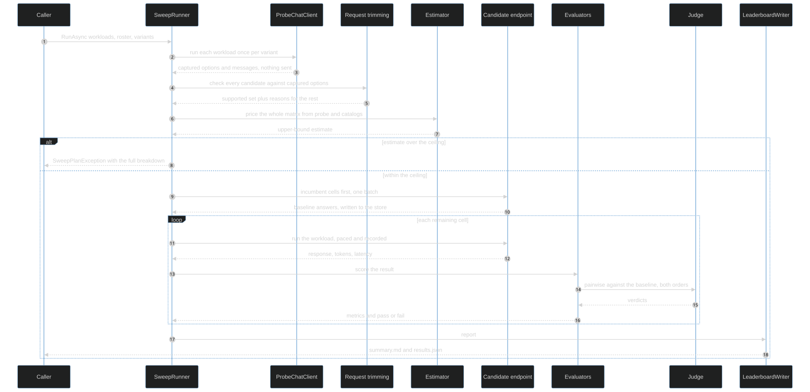
1. Probe. The scenario or episode runs once per (workload, variant) against a probe client that sends nothing over the network and records the chat options and messages the application's code actually produced. The delegate is free to throw after the call: the request options were captured before that. The probe reply only has to be shaped well enough for the application's own parsing to reach the model call.
The probe is the hinge of the whole design. Everything downstream (the capability gate, the spend estimate, the per-role call counts) is computed from what the real code asked for, not from what a harness author assumed it would ask for.
2. Capability gate. Each candidate's declared capabilities are checked against the probed options: structured-output support against the requested response format, tool support against requested tools, and the requested reasoning effort against the efforts the model accepts. A model that cannot honour the request is recorded as unsupported and never called. Unknown capabilities are deliberately permissive, so a gap in catalog data shrinks nobody's field; the provider becomes the judge instead.
3. Estimate and ceiling. The whole matrix is priced from the probe and the catalog data before anything is sent. The estimate is an upper bound, not a forecast: input from prompt length, output from a declared expectation where there is one and from the request's own token ceiling otherwise, each episode role at the call count its probe showed rather than at the whole turn budget. If the estimate exceeds the ceiling the run throws before spending anything, and the exception carries the full breakdown (cells, workloads, variants, repeats, per-role contribution) so it is clear which dimension to cut.
Declaring expected output tokens matters more than it looks. Left undeclared, a scenario that rarely reaches its ceiling is priced at that ceiling, which can overstate a whole sweep several-fold and refuse a run that would have been affordable.
4. Baseline cells first. When the sweep has an incumbent and a pairwise judge, the incumbent's cells run as one batch before anything else. Every other cell then reads the incumbent's answer to the same workload, variant and iteration back out of the reporting store and is judged against it. Ordering is not an optimisation here: without the incumbent's answer on disk there is nothing to compare against.
5. Cells. Each cell runs the workload once, through a recording client that captures every request and response, under the concurrency cap and the per-minute pacer. With response caching on, a cell whose request matches a cached response replays it at no model cost.
6. Recorders and evaluators. Every result is scored by the workload's own evaluators plus the package's built-ins. Deterministic evaluators run first and cost nothing; judged evaluators call the judge.
7. Report. The leaderboard writer emits a summary and a results file, ranked by cost per passing generation, with a suggested-adjustments section, a selection section where the sweep judged pairwise, and banners for anything that should qualify how the numbers are read (stopped on the ceiling, caching on, judging outside the estimate).
Two properties of the lifecycle are worth stating plainly, because they change how a run is operated:
- A stopped run needs no resume flag. Run the same command again. Candidate responses and judge calls are both cached on disk, so every finished cell replays at no model cost and the run picks up where it left off.
- A dry run walks steps 1 to 3 and stops, recording every cell as skipped. It is the cheap way to see a matrix's cost before committing to it, and the dashboard makes it mandatory before a live run.
5. Evaluators and judges
Scoring is layered, cheapest first, and the layers answer different questions.
5.1 Hard gates
Deterministic evaluators cost nothing and decide whether a generation passed. They check that the response ran to completion, that structured output parses and carries the required fields, that the output is in the expected language, and whatever domain rule the application itself enforces. A custom evaluator reads the call or episode context off the evaluation context and inspects the response or the episode's final artifact.
The completeness check earns its place by catching a specific expensive failure: a reasoning model that spends its whole output allowance thinking and returns a paid-for response with no visible content. Without it, that cell looks like a cheap empty answer rather than a full-price nothing.
5.2 Single-response judges
The evaluation library ships absolute 1-to-5 judges (coherence, fluency, relevance, groundedness, completeness). They are useful and they are weak for this purpose, because absolute scores cluster: a clearly better answer and a merely adequate one routinely both land on 4.
The rubric-score evaluator in this package is the same shape, scoring one response 1 to 5 against a caller-supplied rubric. It exists for the sweep that has no incumbent to compare against, and it stays optional because it is the weaker instrument.
5.3 Pairwise judging, in both orders
The leaderboard answers "cheapest candidate that passes the hard gates". It cannot see a candidate that costs a little more and produces a clearly better answer, because both passed. Pairwise judging adds the missing signal: shown two answers to the same request, the same judge that could not separate them on an absolute scale separates them reliably.
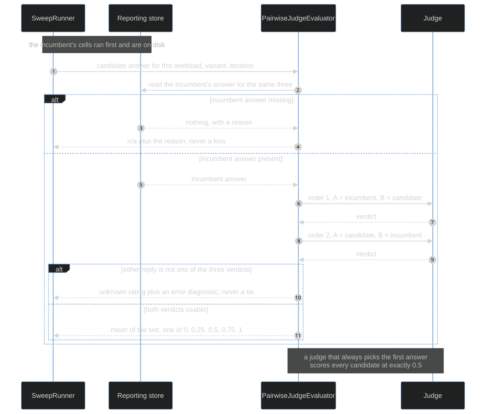
Every comparison runs twice, with the two answers swapped, and the scores are averaged. Judges prefer whatever they were shown first, and a single ordering measures that preference as much as it measures the models. Under both orderings, a judge that always picks the first answer scores every candidate at exactly 0.5, which makes position bias visible instead of letting it masquerade as a result. The win metric is therefore one of 0, 0.25, 0.5, 0.75 or 1.
The reporting rules around it are all instances of the same principle, that an unmeasured thing must never read as a measured one:
- The incumbent's own cells get no comparison and report not-applicable with a reason, never 0.5.
- A missing incumbent result (that cell failed, was unsupported, was skipped on the ceiling, or would not read back) is not-applicable with a reason naming which. It is never a failed candidate.
- A judge reply that is not exactly one of the three expected verdicts is reported with an unknown rating and an error diagnostic, never read as a tie.
- A reply the provider's output cap cut off partway through its explanation is not that case: the verdict it did finish is read and kept.
- A judge call that throws, after the bounded retry described in section 7 is exhausted, stops the sweep. See below for why.
5.4 Judge accounting and output caps
The cost is two judge calls per non-incumbent cell, plus one per cell carrying a rubric score (the incumbent's cells included, since they are scored even though they are never compared against themselves). Declaring the judge's pricing puts those calls inside the estimate; without it the sweep logs that the judging is outside the estimate rather than leaving it unsaid.
A judge that reasons needs a different output cap from one that does not. On the OpenAI wire the cap covers hidden reasoning tokens, so a cap sized for a short verdict object returns an empty completion on every cell for a reasoning judge. The package therefore carries two caps, a plain one and a larger reasoning one, and applies the reasoning cap when the roster entry or the enriched capabilities say the judge reasons. The cap is still a cap: an uncapped call to a reasoning model is an open invitation to spend.
The cap is handed to each judged evaluator as part of the request, which means it is part of what the evaluation library caches judge replies on. Changing it re-judges the affected cells rather than replaying stale verdicts. That is the correct behaviour and it has a cost: see section 9.
Why a judge failure stops the sweep. A provider still refusing the judge after the bounded waits will refuse the next thirty cells too. Carrying on would record each of them as an unmeasured metric, paying in full for candidate calls and producing a report that then says there were not enough samples to select anything. Stopping keeps the finished cells, sets a stop reason, and lets a re-run replay everything from cache. Keeping a sweep off that path is a job for pacing and judge concurrency caps, not for more retries.
6. The selection rule
Win rates and a cost-per-pass column are inputs, not an answer. The selection report turns them into two named picks per prompt variant, pooling every workload that ran under that variant.
- Parity pick: the cheapest candidate whose win rate is at or above the parity threshold over at least the minimum number of pooled comparisons. The default threshold sits a little below even on purpose, because at a handful of comparisons a genuinely equal model routinely measures slightly under half.
- Upgrade pick: the cheapest candidate at or above the upgrade threshold whose cost per pass is within a bounded multiple of the parity pick's, or of the incumbent's when there is no parity pick. This is the answer to "what would we buy if quality mattered more than price here".
- Dominators: candidates both better than even and cheaper than the incumbent. There is rarely one, and when there is, it is the whole finding.
Why comparisons pool across workloads. The incumbent is the same model for every workload in a sweep, so a candidate's comparisons against it are the same measurement whichever fixture produced them. Grouping by workload as well capped every candidate at the repeat count, so a sweep of three fixtures at three repeats reported three separate threes, each under the minimum, and selected nothing. Adding a fixture buys evidence. Adding a variant does not: a variant is a different question and gets its own group.
Every pick carries its pooled sample count, the number of distinct workloads behind it, its win rate and a Wilson 95 percent interval over the pooled n. The interval is there because the win rate alone invites a decision the sample cannot support.
Two refusals guard the output:
- Below the minimum sample count the group reports insufficient samples and names nobody. A perfect three-for-three is exactly the result that must not become a purchasing decision.
- With enough samples and nothing over the line it reports that none qualifies and says so, rather than promoting the least-bad candidate.
The same-family flag. The judge and its vendor family are named in every report it produced, and a candidate resolving to that same family is flagged wherever it appears. The family is derived from the wire model id rather than the sweep's connection-qualified label, because a label and a judge id could never match and the flag would never fire. An id the family resolver cannot place is unknown, which matches nothing. Running both orderings cancels position bias; it cannot cancel a judge scoring its own family, so that is made visible instead, and a second judge from another vendor is the answer when the flag matters.
Thresholds are data on the sweep options and the rubric is stored alongside the numbers it produced, so a decision made last quarter can be read back against the rubric that was actually in force.
7. Throttle and continue
A sweep is a burst of traffic from one account against endpoints that cap it. The package treats that as an expected condition with a bounded response, not as an error to retry until it works.
Pacing comes first, and it is pacing rather than retrying. Two caps apply: one for a whole connection and one for a single model. A model that declares its own rate draws on its own bucket and does not consume the connection's, which is the shape most provider caps actually have. An aggregator that caps a new account per model means the judge, answering for every cell of the matrix, meets its cap while the rest of the field on the same route is nowhere near one.
The bucket is keyed on the connection and the wire model id, never the harness's roster id, so a judge entry and a candidate entry pointing at the same upstream model share one bucket exactly as they do at the provider. Where several entries declare a rate for the same bucket, the strictest applies to all of them.
Judge concurrency is the other half and is not a substitute. A concurrency cap bounds how many judge calls are in flight; the bucket bounds how many are sent per minute. A slow provider sits comfortably under a concurrency cap while exceeding a per-minute one.
If a 429 arrives anyway (the pacer knows only this process's own calls), the client re-sends, at most three times per call. What is worth re-sending is the SDK's own classification of transient faults: rate limits, timeouts, server faults and transport failures, and not a 400, which is an answer about the request rather than a failure to deliver it. The schedule is flat: the provider's retry-after header where it sends a usable one, a minute for a rate limit that does not, ten seconds for anything else. A retry-after of zero, or a date already in the past, counts as no header at all.
Every wait is bounded and attributed. A single wait is capped; a provider asking for longer is surfaced immediately as exhaustion of the bound with the requested duration named, because a sweep that stops with a reason restarts from cache while one asleep for an hour cannot be told from one that has hung. Waits are excluded from the latency metric, so pacing does not contaminate the number it would otherwise dominate. Re-sends are logged as warnings with cause, duration and attempt; pacing waits are logged at debug, because a paced call is the sweep doing what it was told and at warning level it would bury the re-sends.
Beyond the bound, the provider's failure stands, and the consequence depends on who was calling:
| Caller | Beyond the bound |
|---|---|
| A candidate cell | Recorded as failed with the reason. The sweep continues; that is a result about that model. |
| The judge | Raises a judge-unavailable failure, records the cell with the reason, sets the sweep's stop reason, and starts nothing further. |
Judge outage versus judge refusal. These are different events and the reports keep them apart. An outage is the judge provider failing to answer, and it stops the sweep. A refusal is the judge answering with something unusable (an error payload, an empty reply, a verdict that is not one of the expected values); that fails the one cell that asked, and in the file-exchange path the offending reply is moved aside as evidence so it never becomes a cached verdict.
One operational cost of the policy deserves naming: a model id that is dead at the provider and answers an error to everything takes four sends and roughly half a minute per call before its cell is recorded as failed. That is the price of finishing a sweep through a transient fault rather than losing it, and it is bounded, but on a large matrix of a broken model it is the difference between a slow run and a fast failure.
Pacing is summarised in the report rather than buried in logs: how many calls waited and for how long in total, and how many were retried after a transient failure, with the status codes. One subtlety for anyone wrapping a provider: the counters hang off the provider interface as a default implementation, so a decorating provider that does not forward them makes the pacing line silently disappear. The sweep logs a warning when models declare a rate and the provider reports no counters.
8. The two judge paths
The judge is the one model that answers for every cell of a matrix, so it is the one that dominates the bill. The package supports two ways to answer it, and refuses to switch between them on its own.
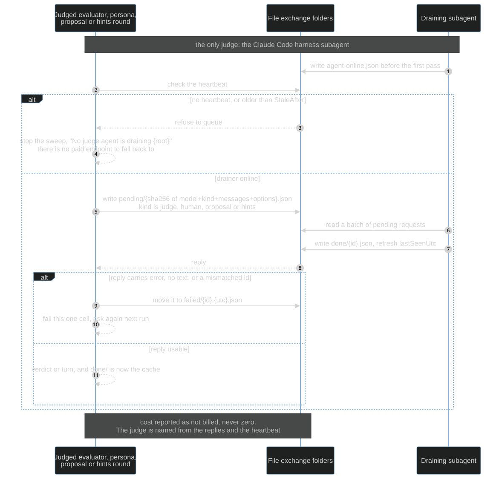
Path A: an API connection. An ordinary endpoint, selected by configuration, billed per call. This is the only path available to a dashboard run, a CI run, or a plain test run with nobody draining an exchange.
Path B: a file exchange drained by a Claude Code subagent. Not an endpoint at all. The sweep writes each judge request to a folder, an agent writes the reply to another, and the sweep reads it back. The judging is done by whoever drains the queue, on their subscription, and the account paying for the candidates pays nothing for the verdicts.
The availability rule is stated in the package README and is reproduced here verbatim, because operating either path depends on it:
If the eval is being run from the Claude Code harness (this session, with a judge-queue subagent draining the exchange), the harness subagent is the judge and no API spend is incurred for judging. If the eval is run any other way (dashboard, CI, a plain
dotnet testwith no draining agent), the harness judge is not available; the only available judge is an API connection such as OpenRouter, selected withLLMEVAL_JUDGE_CONNECTION, and judge calls are billed.
There is deliberately no automatic fallback from B to A. Re-pointing a file-exchange judge at a paid endpoint would put a bill on somebody who explicitly chose the subscription path, silently. When no drainer is online the sweep stops with a reason naming both ways out.
8.1 The exchange, and why the request id is a hash
Four folders carry the protocol: a pending folder the sweep writes to, a done folder the agent writes to, a heartbeat file, and a failed folder the sweep moves unusable replies into.
The request id is a hash over the model, the messages and the options that change what a good answer looks like, and explicitly not over the timestamp. The same question therefore always lands under the same name, which makes the done folder a cache: a second sweep over the same matrix finds every reply already on disk, queues nothing, and needs no agent running at all. Request files are never deleted, so the pending folder is the audit trail of what was actually asked.
That design makes disagreeing with a verdict a file operation: delete the one reply and re-run, and the question is asked again. Delete the folder and everything is re-asked.
8.2 Heartbeat and fail-fast
The agent writes a heartbeat before its first pass and refreshes it on every pass, empty ones included. Without a heartbeat newer than the staleness bound the exchange refuses to queue anything and the sweep stops with a reason, rather than sitting out a two-hour timeout on the first cell. Liveness is the newest of the heartbeat's several timestamps, so a drainer keeping up with an empty queue is not mistaken for one that has died. Starting a run without starting the drainer therefore fails fast, naming both ways out, rather than hanging.
The ordering constraint is the one thing that catches people: the exchange client blocks on its replies, so the sweep has to run in the background while the drainer works. A foreground sweep and a drainer in the same session deadlock, each waiting for the other. Start the drainer first so a heartbeat exists before the first request is queued, launch the sweep in the background, and keep draining in a bounded loop until the run's summary file exists.
8.3 What the reports say about a subscription judge
The cost is reported as not available, never as zero: the spend field is null, the runner is named, and the judge calls are left out of the estimate with a logged note instead of being priced at nothing. The judge itself is named from the exchange's own documents (the model from the replies, the runner from the heartbeat), and a heartbeat that names nobody is reported as a plain file exchange rather than as a subagent that may not have been one.
The honest caveat: there is no model pin behind a subscription agent, so a run is reproducible only in the sense that its reply files were kept, which is exactly why they are kept. Record the judge and the date in any finding, and do not compare win rates across runs whose judge was a different thing.
9. Storage layout and caches
One storage root holds everything a sweep produces, in two halves that are independent of each other.
The store half is the evaluation library's own reporting store, one file per (execution, workload, iteration). Its layout is that library's business. The report half is what the leaderboard writer was pointed at: a summary, a results file, and the prompt proposal files. The dashboard reads both and treats a directory directly under the root as a report directory when it holds a results file, which is what keeps the store and cache folders from being mistaken for executions.
Three caches sit under the root, and they invalidate on different things:
| Cache | Keyed on | Invalidated by |
|---|---|---|
| Candidate responses | The request, partitioned per model, and for an episode per assignment and the cast it names | Changing a prompt, a model, or an assignment's cast. A renamed assignment with a swapped model is a miss, not a replay of the old model's answers. |
| Judge replies (API path) | The judge request, including the output cap | Changing the rubric, the answers compared, or either output cap. |
| Judge replies (file exchange) | The request hash | Deleting the reply file. |
What a rerun re-pays. Re-running after a scorer change, a report change or an interruption costs nothing for any cell that finished. Re-running after a prompt edit re-pays the affected candidate cells. Re-running after an output-cap change re-pays the affected judge calls, which on a large matrix is most of the judging: the cap is part of the cached request precisely so that a changed cap re-judges rather than replaying verdicts produced under a different one.
Caching is on by default because it makes iteration free. Turn it off to measure latency or run-to-run variance, both of which a cache falsifies, and remember that a cache-served cell reports no upstream route, because a cached response carries no fresh routing field.
10. The dashboard
EF.LLMEval.Dashboard is a Blazor Server dashboard over a
storage root. It has three jobs.
Viewer. Every execution under the root, a leaderboard ranked by cost per passing generation and filtered by workload and variant, one cell's transcript with every metric and its reason, a variant diff, and the proposals the advisor wrote. No credential is ever bound to a component: the pages show provider and connection names, model ids and upstream routes, while the keys live inside the host's own client provider.
Run and steer. With a host source registered, the run page lists every host and launches one of its workloads against the application's own container. One sweep at a time for the whole site, on a background task rather than on the circuit, so a browser refresh rejoins a run rather than killing it. The guardrails are all decided in one place, so the page disables a button with the same sentence a start would have been refused with:
- Live runs are off by default. A dashboard meant only to be read cannot spend anything, whatever is posted to it.
- The spend ceiling is a maximum the request cannot raise. A request asking for more is refused rather than quietly lowered.
- A cell cap refuses an oversized matrix before it is planned.
- Every assignment and variant must be named. An empty selection is refused rather than read as "the host's defaults", and an unknown name is refused naming it, because either would let a run plan a matrix larger than the one the cell cap was checked against.
- A dry run is mandatory, and changing any field retires the estimate it produced. Live then asks for confirmation showing the estimate and the ceiling.
- A failure is a status, never a silence. The spend refusal is shown verbatim, because its message carries the whole breakdown.
Because the dashboard is one of the "any other way" cases from section 8, a judged run launched from it uses an API judge and is billed.
Proposals. Accepting a proposal writes it into an accepted set, kept separately from the file the advisor wrote: what was suggested and what a person approved are different claims, and one should not overwrite the other. The accepted set is offered on the run page and wins over a host variant of the same name.
One limitation worth knowing before reading a variant diff: a sweep records variant names, not variant text. Neither the results file nor the store carries a workload's editable prompts or a variant's overrides, so the diff renders override-only and says so on the page.
11. The prompt-development loop
Three layers, cheapest first, and only the last one costs anything.
Adjustment hints, free and always on. A small literal table maps a deterministic evaluator failure to the edit that usually fixes it: a fenced payload in a structured-output failure into "state that the output must be the bare object with no code fence"; a truncated or empty response into "raise the output allowance or lower the reasoning effort"; an unexpected script into "put the language directive last and repeat it in the user message". The table is deliberately narrow. A hint that fires on a vague match sends somebody to rewrite a prompt that was not the problem.
Vendor prompting notes, embedded. What each vendor documents about prompting its own family, with the source URL and the date it was read, so stale advice is visible as stale. Lookup is by substring against the model id with the longest family winning, so an aggregator-qualified id still finds the specific family entry rather than the vendor-wide one. The leaderboard shows the notes for any model that failed.
The prompt advisor, opt-in. Given a failing cell it asks a model the caller supplies (not one of the candidates under test) for a small number of prompt variants, including the deterministic hints and the vendor notes in the brief. Two refusals define it: it rejects any proposal naming a key the workload did not declare editable, before anything is written, and it rejects an unparseable reply the same way.
It never runs what it proposed. Proposals are written to a file for a person to read, and the next sweep loads the ones that were accepted. That boundary is the point of the layer: a loop where a model edits the prompt and then measures its own edit is not an experiment.
The loop in practice: run a sweep with the baseline variant as control, read the suggested adjustments for whatever failed, turn the ones that make sense into named variants, and re-run. The cached candidate responses mean the unchanged cells cost nothing the second time.
12. Design boundaries
What the package refuses to do is as load-bearing as what it does. Each refusal exists because the alternative produces a number somebody would act on.
| Refusal | Why |
|---|---|
| Call a model that cannot honour the probed request | Downgrading the request to fit it makes the ranking meaningless. |
| Guess a price | An unresolved meter stays unknown, with diagnostics. The model still runs and is left out of the cost ranking rather than treated as free. |
| Overspend silently | The matrix is priced up front and refused against the ceiling, with a breakdown naming which dimension to cut. |
| Hide a failure | A model that errors, or returns output the application's own code rejects, is recorded with its reason and the sweep continues. Both are results about that model. |
| Fall back from a subscription judge to a paid one | That would bill somebody who chose otherwise, silently. |
| Adopt its own prompt suggestions | Proposals go to a file for a person to read. |
| Mutate the caller's state | Options handed to a client are cloned before being read, so an application that reuses and re-tunes one options object never rewrites what an earlier call is remembered as having asked for. |
Known limitations, stated so they are not discovered during a run: a cache-served cell reports no upstream route; there is no zero-configuration managed-identity path, only a caller-supplied credential; there is no built-in retry, circuit-breaker or rate-limit layer around a provider call beyond the pacing described in section 7, so a sweep needing more wraps the client or the HTTP client itself; and no live tests ship in the package, because proving the wire mapping against a real provider is a consuming project's own opt-in lane.
Appendix: sample outputs
Every figure, model id and transcript in this appendix is a
synthetic sample. The names are invented, the numbers are
illustrative, and nothing here came from a real provider or a real
application. The shapes are faithful: the column sets
and the wording of the selection blocks match what
LeaderboardWriter emits today.
This appendix sits at the end rather than before section 1 so the orientation above stays short; it is linked from the top of the document because it is the fastest way to understand what a run is for.
Two conventions worth knowing before reading any of it:
- Every numeric metric the sweep produced gets its own mean
column, with no list deciding which ones are interesting. A
real summary is therefore wider than these samples, which show only the
judged columns; a run with cost, token and latency evaluators attached
also carries
mean Cost,mean Input tokens,mean Output tokensandmean Latency (ms). n/ais a real value and never a zero. It means the harness had nothing to measure, and the reason is recorded next to it.
A.1 Single-shot leaderboard (synthetic sample)
One table per (scenario, variant), ranked by cost per passing generation, ties broken by model id. The model column carries the upstream that actually answered where the endpoint reported one.
# Model sweep 2026-09-11T0930
120 cells: 118 succeeded, 1 failed, 1 unsupported.
Estimated spend 0.812400, actual 0.374512.
Judge cost: not available (judged by the Claude Code harness subagent).
Pacing: 42 calls waited a total of 61.5 s on rate limits; 3 calls retried after a transient failure (429 x2, 503 x1).
## Interpretation.Explain / baseline
| Model | Runs | Passed | Cost per pass | Mean cost | Mean latency | mean pairwise.win | mean rubric.score | Notes |
|---|---|---|---|---|---|---|---|---|
| agg/delta (vendor-d) | 15 | 11/15 | 0.000682 | 0.000500 | 1840 ms | 0.28 | 3.1 | cheap-field |
| agg/beta (vendor-b) | 15 | 15/15 | 0.001140 | 0.001140 | 2310 ms | 0.47 | 3.9 | challenger |
| agg/gamma (vendor-c) | 15 | 15/15 | 0.002310 | 0.002310 | 3620 ms | 0.72 | 4.4 | challenger |
| agg/alpha (vendor-a) | 15 | 15/15 | 0.004180 | 0.004180 | 2980 ms | n/a | 4.1 | baseline |
| fp/alpha | 15 | 14/15 | 0.005121 | 0.004780 | 2450 ms | 0.53 | 4.2 | |
| agg/epsilon | 15 | 0/15 | n/a | n/a | n/a | n/a | n/a | unsupported: no strict structured output |Reading it: agg/delta is the cheapest per pass and loses
most of its comparisons, which is exactly what cost per pass alone
cannot tell you. agg/alpha is the incumbent, so it has no
win rate against itself and reports n/a rather than 0.5.
agg/epsilon was never called at all.
The selection block that follows the tables:
## Selection
Judged by vendor-c/judge-1 (family vendor-c). Comparisons are pooled across scenarios. Parity at a
win rate of 0.45, upgrade at 0.65, at least 6 judged comparisons, and an upgrade may cost at most 3x
the parity pick.
Rubric: Answers the question asked, stays inside the supplied facts, names its uncertainty, and never pads.
### baseline (5 scenario(s): Interpretation.Explain, Interpretation.Summarise, ...)
Selected: a parity pick and an upgrade pick both cleared their thresholds.
- Parity pick: **agg/beta**, win rate 0.47 (n=15 over 5 scenario(s), 95% 0.25 to 0.7), cost per pass 0.001140
- Upgrade pick: **agg/gamma** (same vendor family, vendor-c, as the judge vendor-c/judge-1), win rate 0.72 (n=15 over 5 scenario(s), 95% 0.47 to 0.88), cost per pass 0.002310
| Candidate | n | Scenarios | Win rate | 95% interval | Cost per pass |
|---|---|---|---|---|---|
| agg/gamma (same vendor family, vendor-c, as the judge vendor-c/judge-1) | 15 | 5 | 0.72 | 0.47 to 0.88 | 0.002310 |
| fp/alpha | 15 | 5 | 0.53 | 0.3 to 0.75 | 0.005121 |
| agg/beta | 15 | 5 | 0.47 | 0.25 to 0.7 | 0.001140 |
| agg/delta | 15 | 5 | 0.28 | 0.12 to 0.52 | 0.000682 |The same-family flag on the upgrade pick is the thing to act on here: the candidate about to be chosen shares a vendor family with the judge that chose it. Running both orderings cancels position bias but cannot cancel that, so the answer is a second judge from another vendor, not a footnote. Note also how wide the intervals are at n=15. A win rate of 0.72 with a lower bound of 0.47 is a lead, not a proof.
A.2 Multi-agent episode leaderboard (synthetic sample)
One table per (episode, variant), with a model and a cost column per role. The per-role split is the point: an acceptable total is often mostly one role that a cheaper model would run just as well.
## Tutoring.Session / baseline
| Assignment | Runs | Passed | Cost per pass | Mean cost | teacher model | teacher cost | checker model | checker cost | student model | student cost | mean Turns to completion | mean pairwise.win | Notes |
|---|---|---|---|---|---|---|---|---|---|---|---|---|---|
| cheap-checker | 9 | 9/9 | 0.014200 | 0.014200 | agg/alpha | 0.009100 | agg/delta | 0.001600 | scripted | n/a | 4.2 | 0.51 | |
| baseline-cast | 9 | 9/9 | 0.019800 | 0.019800 | agg/alpha | 0.009300 | agg/gamma | 0.007200 | scripted | n/a | 4.1 | n/a | baseline |
| strong-teacher | 9 | 8/9 | 0.031400 | 0.027900 | agg/gamma | 0.021000 | agg/gamma | 0.006900 | scripted | n/a | 3.4 | 0.69 | 1 failed, first: turn cap reached before a summary |
| cheap-teacher | 9 | 5/9 | 0.009800 | 0.005400 | agg/delta | 0.003100 | agg/gamma | 0.002300 | scripted | n/a | 5.8 | 0.22 | cheap-field |Reading it: cheap-checker keeps the teacher and swaps
only the checker, and lands at parity for three-quarters of the
incumbent's cost. cheap-teacher is the cautionary row: it
looks cheapest per call, but it passes five times in nine and takes
nearly six turns to get there, so its cost per pass is
higher than the row above it and its win rate is poor. The
student role is a scripted human, so it has no cost at
all.
### baseline (1 scenario(s): Tutoring.Session)
Selected: a parity pick cleared its threshold; an upgrade pick also qualified.
- Parity pick: **cheap-checker**, win rate 0.51 (n=9 over 1 scenario(s), 95% 0.24 to 0.77), cost per pass 0.014200
- Upgrade pick: **strong-teacher**, win rate 0.69 (n=9 over 1 scenario(s), 95% 0.39 to 0.89), cost per pass 0.031400An upgrade at 2.2x the parity pick is inside the default bound, but n=9 over a single fixture is thin evidence. This is the case for adding fixtures rather than repeats: comparisons pool across scenarios, so a second and third fixture would take the same decision to n=27.
A.3 Workflow leaderboard, by node (synthetic sample)
A workflow measured through the FlowEngine adapter is an episode whose roles are its agent nodes: a role binding's service key doubles as the node's client reference, so a role column in this table is a node in the workflow definition.
## Loans.Review / baseline
| Assignment | Runs | Passed | Cost per pass | Mean cost | extract model | extract cost | assess model | assess cost | explain model | explain cost | mean Episode completed | mean pairwise.win | Notes |
|---|---|---|---|---|---|---|---|---|---|---|---|---|---|
| cheap-extract | 6 | 6/6 | 0.021700 | 0.021700 | agg/delta | 0.001200 | agg/alpha | 0.014300 | agg/beta | 0.006200 | 1 | 0.58 | |
| baseline-cast | 6 | 6/6 | 0.027900 | 0.027900 | agg/beta | 0.007400 | agg/alpha | 0.014300 | agg/beta | 0.006200 | 1 | n/a | baseline |
| cheap-assess | 6 | 4/6 | 0.024600 | 0.016400 | agg/beta | 0.007300 | agg/delta | 0.002900 | agg/beta | 0.006200 | 0.67 | 0.25 | 2 failed, first: workflow faulted at node assess |Reading it: the extraction node is a mechanical transformation and runs perfectly well on the cheapest model in the field, which is most of the saving. The assessment node is the one carrying the judgement, and moving it down costs two failed runs out of six. That is the split a single total would have hidden, and it is the reason the adapter reports per-node cost at all.
mean Episode completed is the built-in episode outcome
metric: 1 where every run completed, 0.67 where two of six did not.
A.4 Value charts (synthetic samples)
The leaderboard answers "what did each candidate cost and how often did it win". These charts are the same data read as a decision: cost per passing generation on the x axis, win rate against the incumbent on the y axis, with the parity and upgrade thresholds drawn as lines and the picks ringed.
The incumbent is drawn as a vertical cost reference line, not as a point, because it has no win rate against itself. The harness reports that as not applicable and never as 0.5, and a point at 0.5 would invite exactly the misreading the harness refuses to make.
A clear upgrade exists. One candidate is judged clearly better and costs about twice the parity pick, inside the default bound. Both picks are reported and the choice is a real one.
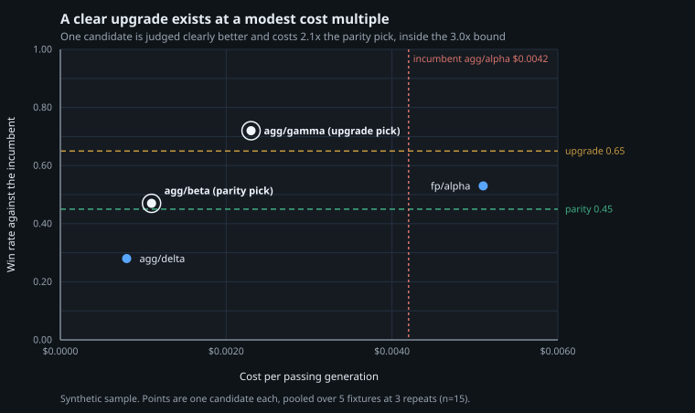
Parity everywhere. Nothing clears the upgrade threshold, so the decision collapses to price at equal measured quality. No upgrade pick is reported at all, which is a result and not a gap. This is the usual outcome for a well-specified prompt, and the finding is "take the cheapest".
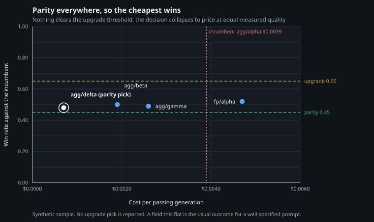
The incumbent is dominated. Two candidates are both better than even and cheaper. Dominators are reported separately from the picks, because better and cheaper needs no trade-off argument.
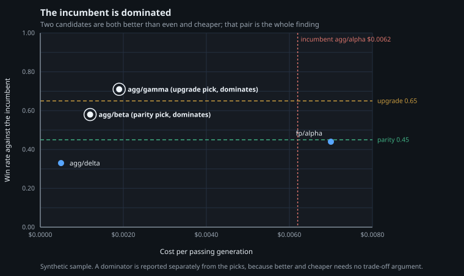
The three charts are generated from committed JSON samples by diagrams/tools/render-value-charts.mjs,
a dependency-free node script. Re-render them with:
node EF.LLMEval/docs/diagrams/tools/render-value-charts.mjsOutput is deterministic, so re-rendering an unchanged sample produces a byte-identical file and never shows up as noise in a review.
Further reading
| Document | What it covers |
|---|---|
| EF.LLMEval README | Every type, option and default. The API source of truth. |
| LLMEval-INTEGRATION-GUIDE.md | Adding an eval to a .NET solution, step by step. |
| LLMEval-Operations.md | Budgets, pacing, caches, secrets, CI, reading the dashboard. |
| EF.LLMEval.FlowEngine README | Running a workflow as an episode. |
| EF.LLMEval.Dashboard README | Registering and hosting the dashboard. |